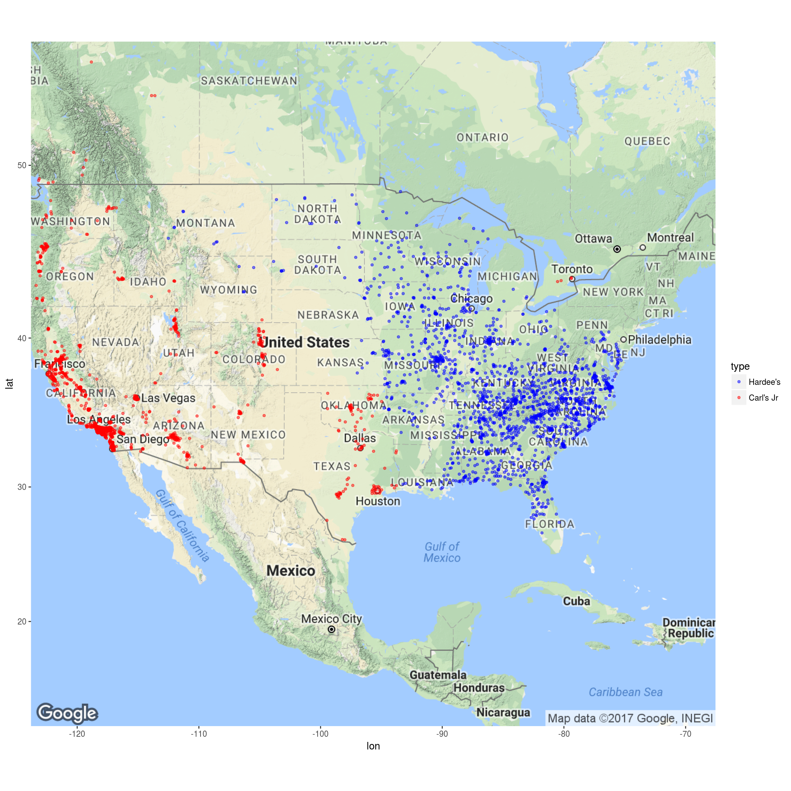

In this project, we will analyze the locations Hardee’s and Carl’s Jr. First we’ll load the required libraries.
library(readr)
library(knitr)
library(ggmap)
library(caret)
library(kernlab)
library(dplyr)Now we’ll read in the location data for Hardee’s and Carl’s Jr. These were obtained for free from the Poi-Factory website.
Restaurants <- read_csv("Hardee's USA.csv", col_names = FALSE) %>% mutate(type = as.factor("Hardees")) %>%
rbind( read_csv("Carl's Jr_USA_CAN.csv", col_names = FALSE) %>% mutate(type = as.factor("Carls")) )
names(Restaurants) <- c("long", "lat", "name", "address", "type")Next we’ll plot the data on a map.
map<-get_map(location='united states', zoom=4)
ggmap(map) + geom_point(aes(x = long, y = lat, color = type), data = Restaurants, size = 1, alpha = 0.5) +
scale_color_manual(values=c("blue", "red"), labels=c("Hardee's", "Carl's Jr"))
An interesting problem is to see if we can classify whether a restaurant will be Hardee’s or Carl’s Jr based on its location. We’ll use the Caret library to do this. First we’ll create a training set with 2/3 of the data and use the rest for testing.
set.seed(3)
index <- 1:nrow(Restaurants)
testindex <- sample(index, trunc(length(index)/3))
testset <- na.omit(Restaurants[testindex,])
trainset <- na.omit(Restaurants[-testindex,])First we’ll try k-nearest neighbors. We’ll use 10-fold cross validation to find k.
fitControl <- trainControl(method = 'cv', number = 10, summaryFunction=defaultSummary)
grid <- expand.grid(k = 1:100)
mod <- train(type ~ long + lat, data = trainset, method = "knn",
tuneGrid = grid, trControl=fitControl)
pred <- predict(mod, testset)
confusionMatrix(pred, testset$type)## Confusion Matrix and Statistics
##
## Reference
## Prediction Hardees Carls
## Hardees 598 4
## Carls 0 377
##
## Accuracy : 0.9959
## 95% CI : (0.9896, 0.9989)
## No Information Rate : 0.6108
## P-Value [Acc > NIR] : <2e-16
##
## Kappa : 0.9914
## Mcnemar's Test P-Value : 0.1336
##
## Sensitivity : 1.0000
## Specificity : 0.9895
## Pos Pred Value : 0.9934
## Neg Pred Value : 1.0000
## Prevalence : 0.6108
## Detection Rate : 0.6108
## Detection Prevalence : 0.6149
## Balanced Accuracy : 0.9948
##
## 'Positive' Class : Hardees
## So this model did quite well.
The obvious model to try is a support vector machine.
mod <- train(type ~ long + lat, data = trainset, method = "svmRadial")
pred <- predict(mod, testset)
confusionMatrix(pred, testset$type)## Confusion Matrix and Statistics
##
## Reference
## Prediction Hardees Carls
## Hardees 598 1
## Carls 0 380
##
## Accuracy : 0.999
## 95% CI : (0.9943, 1)
## No Information Rate : 0.6108
## P-Value [Acc > NIR] : <2e-16
##
## Kappa : 0.9979
## Mcnemar's Test P-Value : 1
##
## Sensitivity : 1.0000
## Specificity : 0.9974
## Pos Pred Value : 0.9983
## Neg Pred Value : 1.0000
## Prevalence : 0.6108
## Detection Rate : 0.6108
## Detection Prevalence : 0.6118
## Balanced Accuracy : 0.9987
##
## 'Positive' Class : Hardees
## There was still 1 restaurant we couldn’t get correct!